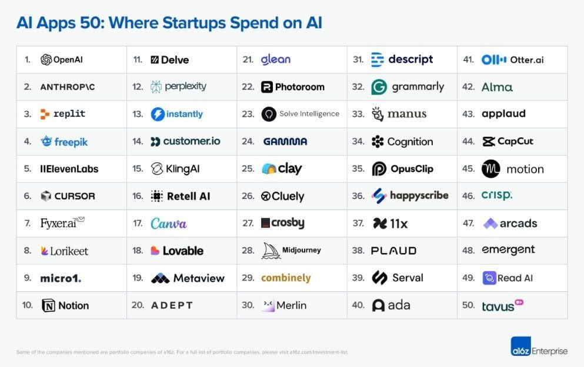

דוח חדש מציג: 50 הכלים המובילים בארגונים על בסיס עסקאות, עם כמה הפתעות: סטארטאפים מריצים ניסויים במקביל במסכמים, עוזרי קוד וכלי פר
פורסם במקור ב LinkedIn
דוח חדש מציג: 50 הכלים המובילים בארגונים על בסיס עסקאות, עם כמה הפתעות: סטארטאפים מריצים ניסויים במקביל במסכמים, עוזרי קוד וכלי פרודוקטיביות; השוק עדיין מפוצל. קופיילוטים מובילים את ההוצאה, כשמעבר הדרגתי לסוכנים אוטונומיים צפוי ככל שזרימות העבודה יבשילו.
מה לא הפתיע? OpenAI ואנתרופיק בראש; Replit, Cursor וכלים יצירתיים כמו CapCut, Canva, Midjourney, Freepik ו-ElevenLabs בולטים ברשימה.
הדוח המלא:
https://lnkd.in/dX2K3e5Q
